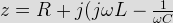
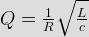
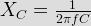

- Find ZL such that maximum power is transferred to it
RTH = [(z + jz) || (-jz)] + jz = 2 Ω.
- At low frequencies, the impedance of a series RLC circuit is
Complex impedance of series RLC circuit is

So this indicates that the circuit will become inductive if ω L > 1/Ω C. for Ω L <1/Ω C, the circuit will become capacitive & this occurs when frequencies is low. - For a parallel resonant circuit with R = 2Ω L = 8H, C = 2F, the quality factor is
.
- A series resonant circuit where the resonance frequency is 150 × 103 and the bandwidth is 75 KHz. What are the value of half power frequencies of the circuit ?
Under construction.
- Power factor of a series RLC resonant circuit will be
When a series RLC circuit occur resonance condition then
XL = X C
So the impedance of RLC circuit be Z = R + JO
= R
Current at resonance = IO = V / Z
= V/ R Amp
The power factor of the circuit becomes = cos φ = R / Z = R / R = 1
That means the applied voltage and resulting current are in phase. - If a series RLC circuit excited by a voltage e = EsinΩ t where LC <1/Ω 2
Here LC <1 / Ω 2
or, Ω <1/Ω C
That means capacitive reactance is greater than the inductive reactance. So the RLC circuit will become capacitive. Hence current leads the applied voltage. - The reactance offered by a capacitor to ac of frequency 50 Hz is 10Ω If the frequency is increased to double, reactance becomes
Capacitive reactance, XC be
. - At resonant frequency an RLC circuit draws maximum current due to the reason that
For resonant condition occur when XC = L. So the impedance of the circuit Z = R. Hence current IO = V/Z = V/R which is maximum.
- A series RLC circuit will have unity power factor if operated at a frequency of
Series RLC circuit will have unity power factor when resonant will occur.
For resonant, XC = XL
So, 1 / (2π fC) = 2π fL. - In a parallel R-L circuit if IR is the current in resistor and IL is the current in inductor, then
The phasor diagram for parallel R-L circuit is shown below, using V as the reference phasor.
As inductor is inductive load so main current I leads IL. - Capacitive susceptance is a measure of
Susceptance is a measure of ability to pass current. So capacitive susceptance occurs a purely capacitive circuits.
- When a sinusoidal voltage is applied across R-L parallel circuit so
R = XL the phase angle will beIf R = XL then power factor will be
 [\math] So, &theata; = 45° or, the phase angle will be 45° As the inductor is present in the circuit, so current (I) lags behind the voltage by 45°.</div>
<p> <script>explanation012();</script></li>
<li>For a series RLC circuit energized with a sinusoidal voltage source of frequency 4 rad / sec, the applied voltage lags the current by an angle of tan<sup>–1</sup>2°. Then the value of R for L = 1H and C = 0.05 F is
<ol>
<li><input type=\"radio\" name=\"q13\" class=\"correct\"/><label>0.5 Ω.</label></li>
<li><input type=\"radio\" name=\"q13\"/><label>1.0 Ω.</label></li>
<li><input type=\"radio\" name=\"q13\"/><label>2.0 Ω.</label></li>
<li><input type=\"radio\" name=\"q13\"/><label>4.0 Ω.</label></li>
</ol>
<p> <input type=") For series RLC circuit, the phase angle is [math]\theata = \tan^{-1} \left (\frac{X_L – X-C} {R} \right) ' style='vertical-align:1%' class='tex' alt='\cos\theata = \cos\tan^{-1}\left(\frac {R} {X_L} \right) [\math] So, &theata; = 45° or, the phase angle will be 45° As the inductor is present in the circuit, so current (I) lags behind the voltage by 45°.
For series RLC circuit, the phase angle is [math]\theata = \tan^{-1} \left (\frac{X_L – X-C} {R} \right) ' style='vertical-align:1%' class='tex' alt='\cos\theata = \cos\tan^{-1}\left(\frac {R} {X_L} \right) [\math] So, &theata; = 45° or, the phase angle will be 45° As the inductor is present in the circuit, so current (I) lags behind the voltage by 45°.- For a series RLC circuit energized with a sinusoidal voltage source of frequency 4 rad / sec, the applied voltage lags the current by an angle of tan–12°. Then the value of R for L = 1H and C = 0.05 F is
For series RLC circuit, the phase angle is [math]\theata = \tan^{-1} \left (\frac{X_L – X-C} {R} \right) ' />
Here ω = 4 rad / sec ; L = 1 H; C = 0.05 F.- Real part of admittance is __________ and imaginary part is ____________
Admittance is a measure of how easily a circuit will allow a current to flow. It is also defined as the inverse of impedance. The impedance Z is composed of real & imaginary parts,
Z = R + jx.
") .
.
So, admittance, just like impedance, is a complex number, made up of real part (the conductance, G) and an imaginary part (the susceptance, B) thus; Y = G + jB.- The current through a series RLC circuit under resonance condition will be
For resonance condition, XL = XC. So impedance Z = R. Thus current I = V / Z = V / R.- Q factor of a series RLC circuit possessing resonant frequency of 10 Hz and bandwidth of 5 Hz is
 .
.- The bandwidth of a resonant circuit is given by
The frequency band within the limits of lower and upper half power frequency is called the bandwidth of resonant circuit or bandwidth can be defined as the ratio of resonant frequency to Q factor.- A parallel resonant circuit has a resistance of 2K Ω and half power frequencies of 96 KHz and 100 KHz. The value of capacitor is
Bandwidth = 2 Π (100 – 96)
= 8Π K rad / sec.
Bandwidth = 1 / RC.- In above question no. 18, what is the value of inductor ?
Ω 0 = (Ω1 + Ω2/2
In parallel resonant circuit,
Ω 0 = 1 / &radiac; (LC).- In above question no. 18, what is the value of Q factor ?
Q = Ω 0 / Bandwidth
Ω 0 = (Ω 1 +
Ω 2 / 2
Bandwidth = Ω 2 - Ω 1. - For a series RLC circuit energized with a sinusoidal voltage source of frequency 4 rad / sec, the applied voltage lags the current by an angle of tan–12°. Then the value of R for L = 1H and C = 0.05 F is
Design with  by SARU TECH
by SARU TECH
www.sarutech.com
Content Credited to electrical4u.com
Online Electrical Engineering Study Site